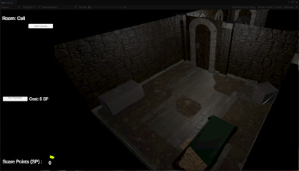

Asymmetrical Horror
Experimenting with Asymmetry
Taking inspiration from popular Virtual Reality Horror Games at the time, as well as from some asymmetrical multiplayer games, this project is an attempt at amalgamating these two genres
to create a fun horror experience. I used modular assets to create the environment, in order to ensure that I had enough time to implement the mechanics that I desired.
For the mechanics and environment, I took inspiration from Resident Evil: Resistance (Capcom) as well as some VR horror games.
I used a timed point system for the Second Player that allowed them to interact with the environment and trigger animations to try and scare the Player in VR.
Genre: Horror
Engine: Unity
Development Period: Approx 9-10 weeks
Platform: PC
Art Direction
Inspiration
The initial project idea drew inspiration from the mechanics of the asymmetrical horror game Resident Evil: Resistance (Capcom), with one player monitoring cameras and interacting with the
environment, to slow down the survivors team enough in order to win the game.
The Mastermind is granted points which they can then spend on cards that let them hamper the survivors, spawning in traps, zombies or upgrading cameras with gun turrets to shoot them as well as other options.
Screenshot from Resident Evil: Resistance - Mastermind Gameplay
The idea of having a points system to spend on certain interactions in the environment to scare the player was taken and adapted into the image you see below. With points gradually building up over time and each room having
different interactions to try and scare the player.
Here you can see the UI for Player 2, being able to switch cameras, spend points and see how many points they have at a given time.
Looking at a selection of horror games released at the time, I spent some time wondering what the ideal location for this project could be. Listing locations and then
finding relevant images of these types of locations to see what I felt would be the ideal fit.
A mix of potential inspirations for the locale of this project.
Environment
Considering I was already making 2 very model orientated projects throughout the year alongside this project and a couple of other smaller ones. I felt like having a project with a
stronger focus on the coding and Unity side would be refreshing
and would also ensure that my workflow didn't become too monotonous. I looked at some popular VR Horror games that were around and noticed that quite a few had Maze-Like elements and used modular assets to create large
environments for the player to explore.
With the modular assets to make the environment, I was able to follow the same structure as my dissertation project and studio project in 4th year and plan potential rooms and expand or condense the project depending on time.
Leaning towards a more linear experience as I didn't have the time to look at procedural generation.
Rough Sketch of a Potential Layout for the Project.
With the ideas in place and working on the implementation of the mechanics that I desired to have in the project I began to create a rough layout for the environment. Having settled on a more castle/dungeon aesthetic for the
project, I planned out what potential "jumpscares" for the project could be and how I could have them implemented.

A couple more games that inspired this project.
Looking at games such as Monstrum, Amnesia, P.T and a few others, I began to notice "trends" between them all, these games typically had;
- Dimly Lit Narrow Corridors.
- Maze-Like in terms of Layout.
- Used Light as a Mechanic through Flashlights, Lanterns or Glowsticks.
- Used Doors to Divide the Envrionment to Restrict Player's Knowledge of what's ahead.
Here are some of the Modular Elements I created for this project.
Documentation
Project Purpose
For this project, our lecturer for the VR side of the course showed us multiple possible mechanics to use that would fulfill the brief of this project. The second I saw the Camera Render Textures
and the possible uses for them, I knew exactly what I was going to with it. I was going to make a horror game where one player would sit at the computer, switching through different perspectives using Camera Render Textures and
interact with things in the environment in order to scare the player who was in VR exploring the game.
Perspective of the player in VR
Game Design
One player has to navigate the environment going from point A to point B in VR, meanwhile the other player can flick through different cameras and spend points in order to activate jump scares near where the VR player is.
The inspiration for the cameras and interacting with mechanics this way came from Resident Evil: Resistance (Capcom), an Asymmetrical Multiplayer game that came alongside Resident Evil
3 Remake (Capcom).

Unity Implementation
Made a rough blocking based upon my concept art in 3ds max, exported it over to unity and began to work on setting up everything that I would need for Player 2, who would be interacting with the environment to scare Player 1.
With my intentions of having a library, boiler room and some corridors with different lighting and audio cues, I began creating any assets that I would need in order to create the desired particle effects or
animations for Unity.
Creating the windows and the Glass Shards, Books, Steam, Wall Torches, Doors and the Players Lantern.
External Screenshot of the environment.
Once all of these assets were created, I then began to develop the code that would activate all of these things, then link them to Player 2's controls and their points.
Self-Reflection
Areas that I believe that I did well on during the process of this project;
These are some areas that I believe I could improve upon.
© All rights reserved
{kind=link}
{kind=link}
{kind=link}
{kind=link}
{kind=link}
{kind=link}
{kind=link}
{kind=link}
{kind=link}